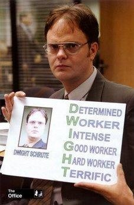
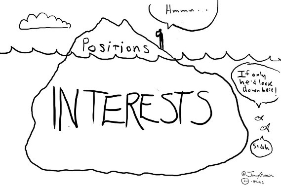
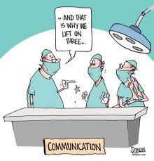

Use power and influence, and know where their limits are
2
See how differently two people can perceive the same situation
3
Communicate and build trust, including across cultures
4
Spot the biases that most often derail agreements
SESSION 4 · ON YOUR PHONES
A few questions before we start
The chance of a shared birthday
A certain return, or a risky one
What a small risk is worth to you
Whether a company’s decision is fair
Your own birthday
A cold drink on a hot beach
Answer on your own, and don’t compare: not everyone is asked exactly the same questions. Your answers are anonymous.
QR CODE IN THE SESSION
0people answered
DEMO DATA
SESSION 4 · THE PERFORMANCE INTERVIEW
The performance appraisal context
From a manager’s point of view
Difficult and time consuming (easy to put off)
Can create conflict (everyone wants to be “above average”)
Requires ongoing collection and delivery to be effective
From an employee’s point of view
Infrequent evaluation
(May be) unaware of problems
Feel vulnerable, and reluctant to seek feedback

Problems with communication and differences in perception are common
SESSION 4 · THE PERFORMANCE INTERVIEW
Exercise: The Performance Interview
Read the instructions and get ready for your performance interview (10 minutes)
Conduct the interview (20 minutes)
Answer three questions on your phone
Be prepared to discuss the results
Chris Amon, brand manager
Lee Petty, product manager
A manager meets a member of their team, six months after the last review. Keep your brief to yourself.
SESSION 4 · THE PERFORMANCE INTERVIEW
After your interview
What participants see
0pairs answered
QR CODE IN THE SESSION
Use this QR code to answer three questions on your phones
DEMO DATA
SESSION 4 · DEBRIEF
What the Performance Interview highlights
WITH YOUR PARTNER: Chris and Lee, tell each other how the interview went from your side. What did each of you want from it?
1
Considerations of power and influence
2
The prevalence of differences in perception
3
Managing communication
4
Preferred solutions and approaches
5
The importance of trust
What are Chris’s interests? What are Lee’s? How did you address the issues at hand?

SESSION 4 · DEBRIEF
What were each side’s interests?
DEMO DATA
SESSION 4 · POWER
Power and influence
Influence and power
Influence: persuading others to do what you want them to, often because they see it as good to do
Power: the ability to “force” others to do the things you want done, based on information and expertise, control over resources, or position in an organisation
Power gives you an advantage in a negotiation, but it’s not absolute!
So why negotiate if you have power?
Negotiation doesn’t mean abdicating power: it means using authority to find solutions that satisfy both sides’ interests
Managers have power over others, but not absolute power
Better to have someone who is willing to follow, not coerced
SESSION 4 · PERCEPTION
Count the passes
Count how many times the players in white pass the ball
In the original test, about half of viewers missed a person in a gorilla suit who was on screen for nearly nine seconds
In this version, people who knew to expect the gorilla saw it, but only 17% of them noticed the other changes
The Monkey Business IllusionDaniel Simons
When we fix on one thing, such as the price, we can miss what is right in front of us
SESSION 4 · PERCEPTION
Differences in perception
Perception is a “sensemaking” process: people interpret the environment so they can respond
Because we are different, we may see the same situation differently
Differences in perception between managers and employees are common
What are the differences in perception highlighted by the exercise?
SESSION 4 · COMMUNICATION
Managing communication
1
What is your process strategy?
2
Location and seating
3
Openings: identify a super-ordinate goal
4
Openings: make a personal connection

SESSION 4 · DEBRIEF
Did the sensitive matter come up?
0
How many of you still felt uncomfortable at the end? Addressing the issue directly is one way to regain trust…
DEMO DATA
SESSION 4 · TRUST
Why does trust matter?
Trust is important in ongoing relationships
Addressing the issue directly is one way to regain trust
That is especially important in ongoing relationships
Breaches of trust can
Diminish one’s reputation
Undermine the relationship
Create dysfunctional organisational cultures, unfriendly and unforgiving
Reduce leadership effectiveness: it becomes difficult to get things done through others
SESSION 4 · HIRING A NEWTONIAN
Exercise: Hiring a Newtonian
Read the instructions and get ready for your negotiation (10 minutes)
Find a new partner, with the same number as you
Conduct the negotiation (20 minutes)
Record your agreement on your phone, and be prepared to discuss it
Human resources director
Prospective employee
A job offer has been made and accepted. Three details are left. Keep your brief to yourself.
SESSION 4 · HIRING A NEWTONIAN
Record your agreement
What participants see
0pairs recorded
QR CODE IN THE SESSION
Use this QR code to record your agreement on your phones or laptops
DEMO DATA
SESSION 4 · DEBRIEF
Every pair’s agreement
WITH YOUR NEIGHBORS: Before we see every pair’s agreement, compare yours. Where did each of you misread the other side?
What challenges were present for each side? How did you overcome them? How does this relate to negotiating across cultures?
DEMO DATA
SESSION 4 · DEBRIEF
What were each side’s interests?
DEMO DATA
SESSION 4 · IN THE NEWS
When a smile means something else
Walmart entered Germany in 1997. In 2006 it sold its 85 German stores to Metro, expecting a loss of about $1 billion
Analysts said German shoppers had rejected stores outside town centres, baggers at the checkouts, and staff required to smile and heartily greet every customer
Courtesy in one culture can read very differently in another
SESSION 4 · BIASES
Irrationality and biases
People are imperfect bargainers, and irrationality often comes from biases in decision making
Escalation
Irrational commitment to one course of action
A fixed pie
Assuming one side’s gain is the other’s loss
Anchoring
Judgements anchored on irrelevant information
Framing
Being overly affected by how information is presented
Availability
Relying too much on readily available information
Overconfidence
Being sure the negotiation will go your way
SESSION 4 · YOUR ANSWERS
Relying on (bad) available information
A group has 25 people in it. What is the chance two share a birthday?
0
Misinformation and misperceptions can cause conflict when none should be present
DEMO DATA
SESSION 4 · YOUR ANSWERS
Framing and risk
Risk preferences depend on the stakes: people are risk averse when the stakes are high, and risk takers when they are low
Conflict is harder to resolve by bargaining when people feel they have nothing at stake
Among professionals I have taught in the United States, 88% took the sure thing when the stakes were high, and only 25% when they were low
DEMO DATA
SESSION 4 · YOUR ANSWERS
People are asymmetric about risk
To remove a one in 1,000 risk
To reduce a four in 1,000 risk to three in 1,000
To take on a one in 1,000 risk
People demand much more to take on a risk than to reduce one by the same amount
DEMO DATA
SESSION 4 · FRAMING
An even more famous example of framing and risk
A country is preparing for the outbreak of an unusual disease, expected to kill 600 people. Two programmes to fight it have been proposed. Which would you favour?
Programme A: 200 people will be savedProgramme B: a one-third chance that 600 people will be saved, and a two-thirds chance that nobody will be saved
72%chose programme A
The same outbreak, the same 600 people, and the same two programmes, described another way. Which would you favour?
Programme C: 400 people will dieProgramme D: a one-third chance that nobody will die, and a two-thirds chance that 600 people will die
22%chose programme C
SESSION 4 · YOUR ANSWERS
Framing without weighing asymmetries
The same cold drink, on the same beach. What price are you willing to pay?
From a fancy resort hotel
From a small, run-down grocery shop
The way one party frames a position can strongly influence whether the other side accepts it
DEMO DATA
SESSION 4 · ON SCREEN
NEGOTIATIONS ON SCREEN: YES, PRIME MINISTER
Sir Humphrey shows how to get the answer you want from an opinion poll on bringing back national service: it depends on the questions you ask first
In 2024, Ipsos ran both sets of questions as a real poll. After one set, 45% were in favour; after the other, 48% were against
How a question is framed changes the answer
For and Against National ServiceYes, Prime Minister
SESSION 4 · FRAMING
Assume this position…
You will receive a point every time you push the other person’s hand toward the table
Your goal is to score as many points as you can within 10 seconds
SESSION 4 · ANCHORING
Framing around bad anchors
Bad anchors
An “anchor” is a standard against which later decisions are measured
Anchors are often arbitrary, but once they are created, parties treat them as real
So “success” and “failure” are often judged against anchors with little connection to reality
Anchors when someone wants a raise
Their current salary
The company’s initial position
Their own resistance point, target and initial position
Each one turns the same outcome into a “win” or a “loss”
SESSION 4 · YOUR ANSWERS
Was the company’s decision fair?
Among professionals I have taught in the United States, 45%, 18% and 60% found these acceptable
DEMO DATA
SESSION 4 · FAIRNESS
Two monkeys paid unequally
Capuchin monkeys traded tokens for slices of cucumber, and were happy to
When a partner got grapes instead, they completed far fewer trades: 60% rather than 95%, and 20% when the partner got grapes for less effort
A gain can be refused because it feels unfair
Two Monkeys Were Paid UnequallyFrans de Waal · TED
SESSION 4 · THE ENDOWMENT EFFECT
The endowment effect
The tendency to overvalue something you believe you possess
Negotiations are difficult to settle when one party feels they are giving up something they already possess
The coffee mug experiment: median values
SESSION 4 · ESCALATION
Escalation of commitment: the auction
“Throwing good money after bad”
People never like to admit when they’re wrong
Negotiations can be difficult to resolve if both sides are unwilling to reduce their commitment to their positions
THE AUCTION: 100 points go to the highest bidder, and the second-highest bidder pays their bid too.
SESSION 4 · ON AIR
The Big Man Can’t Shoot
Wilt Chamberlain was a terrible free-throw shooter. Rick Barry was a fantastic one, and shot the ball underhanded
Chamberlain learned from Barry, and by switching to the underhanded technique improved to a career-best free-throw percentage
…And then he switched back. Why?
SESSION 4 · YOUR NEGOTIATIONS
Persuasion in *your* world
Pick one real negotiation coming up at work, then answer five questions:
1
How might the other side see the same situation differently from you?
2
What power do you have, and how could you use it to meet both sides’ interests?
3
How will you open: what super-ordinate goal could you name, and what personal connection could you make?
4
Where is trust at risk, and how could you address the issue directly?
5
Which biases are most likely on each side of the table: anchoring, framing, escalation, a fixed pie or overconfidence?
AT YOUR TABLES: Brainstorm together, pick the negotiation with the most at stake, and choose one person to keep notes and share.
SESSION 4 · TAKEAWAYS
a few key takeaways...
Power is not absolute
Better to influence people by helping them meet their interests
We see differently
The same situation can look very different from the other side
Trust
Addressing the issue directly is one way to regain it
Framing and anchors
The same outcome can feel like a win or a loss
Escalation
Commitment to a position can outlast its reasons
People are imperfect bargainers, so plan for the biases on both sides of the table